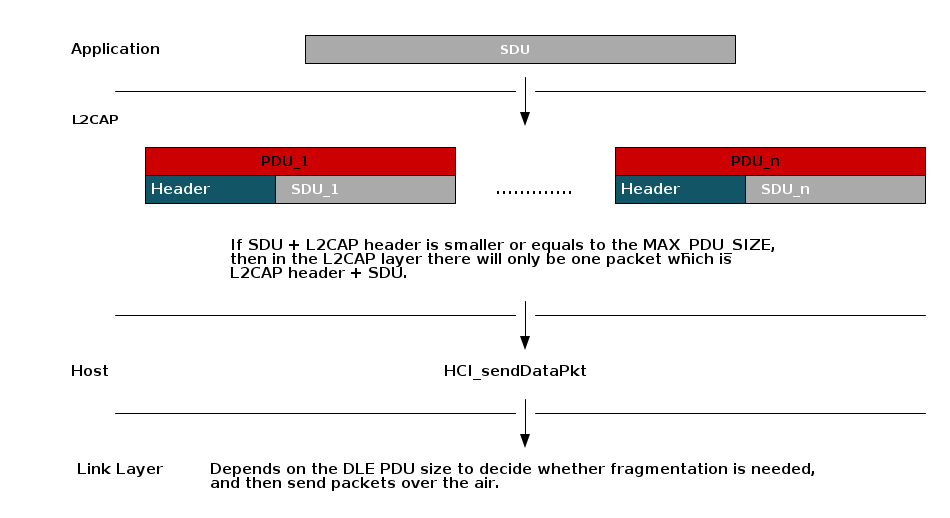

Logical Link Control and Adaptation Layer Protocol (L2CAP)¶
The L2CAP layer sits on top of the HCI layer on the host side and transfers data between the upper layers of the host (GAP, GATT, SM, application) and the link layer. This layer is responsible for protocol multiplexing capability, segmentation, and reassembly operation for data exchanged between the host and the protocol stack. All data from the host or application goes through and is encapsulated in an L2CAP packet. L2CAP permits higher-level protocols (such as GATT and SM) and applications to transmit and receive upper layer data packets (L2CAP service data units, SDU) up to 64KB long. See Figure 92. for more information.
Note
The actual L2CAP payload size is limited by the amount of memory available on the specific device being implemented. L2CAP also permits per-channel flow control and retransmission.
Figure 92. L2CAP Architectural blocks.¶
General L2CAP Terminology¶
Term |
Description |
|---|---|
L2CAP channel |
The logical connection between two endpoints in peer devices, characterized by their Channel Identifiers (CIDs) |
SDU or L2CAP SDU |
Service Data Unit: a packet of data that L2CAP exchanges with the upper layer and transports transparently over an L2CAP channel using the procedures specified in this document. This is the raw payload from the host/app, and does not include L2CAP headers. |
PDU or L2CAP PDU |
Protocol Data Unit: a packet of data containing L2CAP protocol information fields, control information, and/or upper layer information data. This packet includes L2CAP headers. A single SDU may be split across multiple PDUs. |
Maximum Transmission Unit (MTU) |
The maximum size of payload data, in octets, that the upper layer entity can accept (that is, the MTU corresponds to the maximum SDU size). Note: This is different than ATT_MTU. |
Maximum PDU Payload Size (MPS) |
The maximum size of payload data in octets that the L2CAP layer entity can accept (that is, the MPS corresponds to the maximum PDU payload size). |
Credit |
The number of LE-frames that the device can receive. Credits may range between 1 and 65535, and are used as a flow control mechanism between devices. |
L2CAP Basic Header |
L2CAP protocol information that is prepended to each PDU. This includes CID and length |
Protocol/Service Multiplexer (PSM) |
A two octet field that is used to define the interpretation of L2CAP channel data. There are both dynamic and fixed PSMs. Fixed PSMs are assigned by the SIG, while dynamic PSMs may be discovered by GATT. |
Fragmentation/Recombination |
Fragmentation is the process of breaking down L2CAP PDUs into smaller pieces for the controller to send out. Recombination is the process of the controller reassembling fragments into complete L2CAP PDUs. Fragmentation/Recombination is performed by the controller and is based on the LE Data Length Extension feature. Fragmentation/Recombination operations are transparent to L2CAP. |
Segmentation/Reassembly |
Segmentation is the process of breaking a single L2CAP SDU up multiple L2CAP packets called SDU segments. Reassembly in the inverse of this operation on the receive side. Each segment is encapsulated in a proper L2CAP header. Both segmentation and reassembly is handled by the L2CAP layer and transparent to lower and higher layers. |
Important
The max SDU size supported by the stack is L2CAP_SDU_SIZE.
L2CAP Modes of Operation¶
The BLE5-Stack supports two different modes of operation of the L2CAP layer.
Basic L2CAP Mode
LE Credit Based Flow Control Mode
Note that the L2CAP section is shared for BR/EDR, BR/EDR/LE (dual mode), and LE only controller implementations. The BLE5-Stack controller implementation is LE only, thus only the modes above are relevant.
L2CAP Channels¶
There are three types of channels in L2CAP:
Connection-oriented
Connectionless data
L2CAP signaling
Each endpoint of an L2CAP channel is referred to by a channel identifier (CID). See the Channel Identifiers section ([Vol 3], Part A, Section 2.1) of the Bluetooth Core Specifications Version 5.3 for more details on L2CAP Channel Identifiers. Connectionless channels are not supported over the LE-U controller, and thus are not used by the BLE5-Stack.
Channels can be divided into fixed and dynamic channels.
Fixed Channels¶
Fixed channels perform a specific L2CAP function, and use CIDs between 0x0001 and 0x003F. The characteristics of each fixed channel (such as MTU) are defined on a per channel basis.
Tip
Higher level protocols such as ATT may enforce their own MTU, which is different than the L2CAP MTU.
The relevant CIDs that are available for use by the stack or application are listed below.
CID |
Description |
Usage |
0x0004 |
Attribute Protocol (ATT) |
Sending ATT information |
0x0005 |
LE Signaling Channel |
Sending L2CAP commands |
0x0006 |
Security Manager Protocol (SMP) |
Sending pairing/security information |
0x0040-0x007F |
Dynamically Allocated |
LE Credit Based Flow control packets |
For example, data exchanged over the GATT protocol uses channel 0x0004, SMP (pairing and security) uses 0x0006, and the LE signaling channel uses 0x0005. The ATT, SMP, and signaling channels are not directly accessible via the application as they are used by their associated Host layers. Put another way, when calling a GATT related API, it handles the necessary encapsulation into an L2CAP packet. The signaling channel is used for L2CAP connection parameter update procedure, establishing LE credit based connections on the dynamic channels, and exchanging credits.
Dynamically Allocated Channels¶
A dynamically allocated CID is allocated to identify the logical link and the local endpoint. The local endpoint must be in the range from 0x0040 to 0xFFFF. This endpoint is used in the connection-orientated L2CAP channels described in the following section. Credit Based Flow Control mode is used by the L2CAP layer for Connection-Oriented Channels. These dynamically assigned channels are accessible and managed directly at the application layer. This means that the application is responsible for defining its own protocol on top of L2CAP CoC. L2CAP channels are bidirectional and are analogous to sockets.
When a channel is dynamically allocated, it must have the following parameters set:
PSM
MTU
CID
Fixed PSMs are defined by the Bluetooth SIG, these range between 0x0001 and 0x007F. Dynamic PSMs range between 0x0080 and 0x00FF. PSMs may be fixed on GATT server devices, while GATT clients shall obtain PSMs from the GATT service.
L2CAP Frame types¶
There are two frame types that are used by the BLE5-Stack. These are the Basic frame which is used by the fixed channels in basic mode, and the LE information frame which is used by the dynamic channels in LE credit based flow control mode. L2CAP handles framing of the SDU data from the host or application, but it is important to keep the protocol overhead of each frame in mind as it will affect how much application data ends up in a PDU.
The contents of the L2CAP frames are defined in Vol 3, Part A. The LE information frame is defined in section 3.4 and the basic frame is defined in section 3.1. The headers sizes are summarized here for reference.
L2CAP Frame Type |
Header Size (octets) |
Header contents |
Basic frame |
4 |
Length: 2 octets CID: 2 octets |
LE Information Frame |
6 |
Length: 2 octets CID: 2 octets SDU length: 2 octets |
Fragmentation/Recombination¶
From an L2CAP perspective, all packets are delivered to and received from the controller as complete packets. This means that fragmentation/recombination (if enabled by LE Data Length Extension) is performed by the controller and not visible to L2CAP. See LE Data Length Extension (DLE) for more information.
When fragmentation is used, larger packets are split into multiple link layer packets and reassembled by the link layer of the peer device. The picture below shows this relationship.
Note
The DLE PDU is negotiated by LL_LEN_REQ and LL_LEN_RSP. DLE PDU is NOT the same
as L2CAP PDU. For more information regarding how to change the DLE PDU, see
LE Data Length Extension (DLE).
Segmentation/Reassembly¶
When operating in Basic Mode, L2CAP will not perform any segmentation or reassembly. However, when operating in LE Credit Based Flow Control mode on a dynamic channel (CoC) segmentation and reassembly at the L2CAP layer may occur.
Configuring L2CAP¶
Build Configuration¶
The L2CAP CoC dynamic channels by default is not enabled in the projects. It can be enabled by the following methods:
SysConfig tool: For projects that support SysConfig tool, you can enable
L2CAP CoC dynamic channels by checking L2CAP Connection Oriented Channels box.
Please refer to Figure 250. for BLE5-Stack feature overview.
build_config.opt: For projects that do not support SysConfig tool, you can enable L2CAP CoC dynamic channels by adding
-DV41_FEATURES=L2CAP_COC_CFGtobuild_config.optfile.
Runtime Configuration¶
Tip
This is a bit of a misnomer because generally these parameters are set
via #define but they are in fact initialized dynamically at the time
of the stack boot. In this case, runtime means that they not fixed by the
protocol stack library and may be changed by the user.
These L2CAP parameters are passed into the BLE5-Stack at initialization via the
.opt file. These include:
L2CAP_NUM_PSM: Number of Protocol/Service multiplexersL2CAP_NUM_CO_CHANNELS: Number of allowed dynamic CoCs.MAX_PDU_SIZE: Max PDU buffer size that the controller acceptsMAX_NUM_PDU: Number of L2CAP TX PDU buffers in the controllerFor more information for how to change the above parameters, please see Stack Configurations
L2CAP MTU¶
As mentioned in General L2CAP Terminology, the L2CAP MTU is the maximum payload that can be processed by the L2CAP layer. The MTU size is the largest SDU that L2CAP will accept.
However, the MTU used by L2CAP will vary depending on the mode and channel type
Signaling channel will use the
L2CAP_SIG_MTU_SIZEFixed channel packets are limited by
MAX_PDU_SIZE - L2CAP_HDR_SIZECoC packets depend on the PSM’s MTU and are limited by
L2CAP_SDU_SIZE
For fixed channel MTU is defined by a higher level protocol such as ATT.
On dynamic connection oriented channels, the MTU is bound by the minimum of
L2CAP_SDU_SIZE and the peer’s supported MTU.
RAM Considerations¶
Care must be taken with respect to RAM when enabling these features as they will consume heap memory. Additionally, since L2CAP is responsible for encapsulating packets from higher layers, the higher level protocols may have requirements on how L2CAP is configured.
L2CAP Frame Type |
Heap Allocation |
Alloc time |
|
sizeof(l2capPsm_t)*L2CAP_NUM_PSM |
L2CAP init |
|
sizeof(l2capChannel_t)* (MAX_NUM_BLE_CONNS + L2CAP_NUM_CO_CHANNELS) |
L2CAP Init |
|
sizeof( l2capCoChannel_t ) |
Channel creation |
|
Depends on application usage, can be up to MAX_PDU_SIZE*MAX_NUM_PDU in TX case. In the RX case it depends on RX throughput |
Runtime |
|
See above |
Runtime |
The two parameters are only used by dynamic connection oriented channels,
and do not need to be considered if the feature is not used. MAX_PDU_SIZE
and MAX_NUM_PDU as they do affect both the fixed channels used by ATT and
SM as well as the dynamic connection oriented channels.
When using connection oriented channels, L2CAP will allocate space for each TX segment of the SDU before passing to the controller. The size is based on the max packet size that is negotiated by the controller.
On RX, L2CAP will allocate the size of the entire SDU on receiving the first packet based on the length field in the header.
For signaling commands on the fixed channels, L2CAP will allocate the memory
for the packet itself, based on L2CAP_SIG_MTU_SIZE which is the MTU of the
signaling channel.
Tip
For data packet payloads, the higher level protocol (ATT, SM, Application)
is responsible for allocating using L2CAP_bm_alloc(...). In the case
of ATT and SM, this is done transparent to the user. For CoC SDUs, the user
owns the memory associated with the payload.
Controller to Host Flow Control¶
As mentioned above, MAX_NUM_PDU defines the max number of TX packets that
can be queued up to the controller at a time. Attempting to send more packets
will result in a failure code being returned by the high level API and the
packet not being queued up by the controller.
The application may not know how many packets are queued up at a given time so it is best to always check return codes. Additionally, the application can increase the efficiency at which is queues packets up by registering for flow control notifications from the L2CAP layer.
This can be done with L2CAP_RegisterFlowCtrlTask(). When enabled,
the API will notify the application with L2CAP_NUM_CTRL_DATA_PKT_EVT with
the number of data packets that are available for sending. This event is
triggered each time a new buffer becomes available.
Connection Oriented Channels Example¶
The BLE5-Stack provides APIs to create L2CAP CoC channels to transfer bidirectional data between two Bluetooth Low Energy devices supporting this feature. Following are the steps and generic code example which are needed to create L2CAP CoC channels communication using TI BLE5-Stack.
Enable L2CAP CoC Feature, please refer to Build Configuration
Register Simplified Protocol/Service Multiplexer (SPSM). SPSM registration is needed for both central and peripheral devices.
1#define App_SPSM 0x0080 2 3static void application_openL2CAPChanCoc(void) 4{ 5 6 l2capPsm_t psm; 7 l2capPsmInfo_t psmInfo; 8 9 if (L2CAP_PsmInfo(App_SPSM, &psmInfo) == INVALIDPARAMETER) 10 { 11 // Prepare the PSM parameters 12 psm.initPeerCredits = 0xFFFF; 13 psm.maxNumChannels = MAX_NUM_BLE_CONNS; 14 psm.mtu = MAX_PDU_SIZE; 15 psm.peerCreditThreshold = 0; 16 psm.pfnVerifySecCB = NULL; 17 psm.psm = App_SPSM; 18 psm.taskId = ICall_getLocalMsgEntityId(ICALL_SERVICE_CLASS_BLE_MSG, selfEntity); 19 20 // Register SPSM with L2CAP task 21 L2CAP_RegisterPsm(&psm); 22 } 23 else 24 { 25 // print L2CAP setup failed 26 } 27 28}
Tip
This function might be called at the end of the
GAP_DEVICE_INIT_DONE_EVENT.Central or peripheral device sends L2CAP LE Credit Based Connection Request.
1// Send out L2CAP_LE_CREDIT_BASED_CONNECTION_REQ 2L2CAP_ConnectReq(connHandle, App_SPSM, App_SPSM);
Note
Both central and peripheral device can request to establish L2CAP CoC channels. As long as one of the device requests, the link establishment request will be sent. There is no need to add this part of the code for both devices.
Tip
This function might be called at the end of the
GAP_LINK_ESTABLISHED_EVENT.Once the L2CAP credit based connection establishment is successful, the BLE5-Stack will send
L2CAP_SIGNAL_EVENTto the application with opcodeL2CAP_CHANNEL_ESTABLISHED_EVTfor both central and peripheral devices. Therefore, we will implement a function to handle L2CAP messages under application process stack message function.1static uint8_t Application_processStackMsg(ICall_Hdr *pMsg) 2{ 3 4 switch (pMsg->event) 5 { 6 7 case L2CAP_SIGNAL_EVENT: 8 Application_processL2CAPSignalEvent((l2capSignalEvent_t *)pMsg); 9 break; 10 11 ... 12 ...
1// Connected device information. 2// If this structure already exists, it is sufficient to add the cocCID. 3typedef struct 4{ 5 uint16_t connHandle; // Connection Handle 6 uint16_t charHandle; // Characteristic Handle 7 uint8_t addr[B_ADDR_LEN]; // Peer Device Address 8 Clock_Struct *pRssiClock; // pointer to clock struct 9 uint16_t cocCID; // CID for the L2CAP channel 10} connRec_t; 11 12/****************************************************************************** 13* @fn Application_processL2CAPSignalEvent 14* 15* @brief This function is used to handle all the L2CAP signal events. 16* 17* @param pMsg - pointer to the signal that was received 18* 19* @return None. 20*/ 21static void Application_processL2CAPSignalEvent(l2capSignalEvent_t *pMsg) 22{ 23 // Sanity check 24 if (!pMsg) 25 { 26 return; 27 } 28 29 switch (pMsg->opcode) 30 { 31 case L2CAP_CHANNEL_ESTABLISHED_EVT: 32 { 33 l2capChannelEstEvt_t *pEstEvt = &(pMsg->cmd.channelEstEvt); 34 35 if (pMsg->connHandle != LINKDB_CONNHANDLE_INVALID && pMsg->connHandle < MAX_NUM_BLE_CONNS) 36 { 37 // Successfully establish link over L2CAP 38 // Extract the CID and store in the application layer 39 // This will be useful when sending data over L2CAP channels 40 connList[pMsg->connHandle].cocCID = pEstEvt->CID; 41 } 42 else 43 { 44 // Could not establish an L2CAP link 45 } 46 } 47 break; 48 49 case L2CAP_SEND_SDU_DONE_EVT: 50 { 51 if (pMsg->hdr.status == SUCCESS) 52 { 53 // Successfully sending data over L2CAP 54 } 55 else 56 { 57 } 58 } 59 break; 60 61 case L2CAP_CHANNEL_TERMINATED_EVT: 62 { 63 } 64 break; 65 } 66}
Both peripheral and central devices need to exchange L2CAP Credits. After the link is established, devices can distribute credit using the following code snippet.
1l2capChannelEstEvt_t *pEstEvt = &(pMsg->cmd.channelEstEvt); 2 3// Give max credits to the other side 4L2CAP_FlowCtrlCredit(pEstEvt->CID, 0xFFFF);
Tip
This code can be placed when application receives successful
L2CAP_CHANNEL_ESTABLISHED_EVT.Send data using L2CAP CoC channel. In order to send data over L2CAP, L2CAP_SendSDU() is needed. After successfully sending data over the air, the BLE5-Stack will send
L2CAP_SIGNAL_EVENTto application with opcodeL2CAP_SEND_SDU_DONE_EVT.1static bStatus_t Application_sendL2capData(void) 2{ 3 l2capPacket_t pkt; 4 bStatus_t status = SUCCESS; 5 uint8_t appData[] = "Example Data!"; 6 7 // Tell L2CAP the desired Channel ID 8 pkt.CID = connList[connIndex].cocCID; 9 10 // Allocate space for payload 11 pkt.pPayload = L2CAP_bm_alloc(sizeof(appData)); 12 13 // Copy payload data 14 memcpy(pkt.pPayload, appData, sizeof(appData)); 15 16 if (pkt.pPayload != NULL) 17 { 18 19 pkt.len = (sizeof(appData)); 20 status = L2CAP_SendSDU(&pkt); 21 22 // Check that the packet was sent 23 if (SUCCESS != status) 24 { 25 // If SDU wasn't sent, free 26 BM_free(pkt.pPayload); 27 } 28 } 29 else 30 { 31 status = bleMemAllocError; 32 } 33 34 return (status); 35}
Process received data over L2CAP. When device receives data from L2CAP, the BLE5-Stack will send
L2CAP_DATA_EVENTto the application. Therefore, we will handle this under application process stack message function.1static uint8_t Application_processStackMsg(ICall_Hdr *pMsg) 2{ 3 4 switch (pMsg->event) 5 { 6 case L2CAP_DATA_EVENT: 7 Application_processL2CAPDataEvent((l2capDataEvent_t *)pMsg); 8 break; 9 10 ... 11 ...
1/****************************************************************************** 2* @fn Application_processL2CAPDataEvent 3* 4* @brief This function is used to handle the L2CAP data extraction. 5* 6* @param pMsg - pointer to the signal that was received 7* 8* @return None. 9*/ 10static void Application_processL2CAPDataEvent(l2capDataEvent_t *pMsg) 11{ 12 if (!pMsg) 13 { 14 // Caller needs to figure out by himself that pMsg is NULL 15 return; 16 } 17 18 // The data locates under pMsg->pkt.pPayload 19 // Extract the data and do what you want to do 20 // For example: 21 //Display_printf(dispHandle, 19, 0, "L2CAP data Rx: %s", pMsg->pkt.pPayload); 22 23 // Free the payload (must use BM_free here) 24 BM_free(pMsg->pkt.pPayload); 25}
The Figure 93. shows a sample connection and data exchange process between central and peripheral device using a L2CAP connection-oriented channel in LE Credit Based Flow Control Mode.
![@startuml
participant Central
participant Peripheral
rnote over Central
Resgister PSM
end note
rnote over Peripheral
Register PSM
end note
== Connection Established ==
Central --> Peripheral : L2CAP_ConnectReq()
Central -> Central : L2CAP_SIGNAL_EVENT\nL2CAP_CHANNEL_ESTABLISHED_EVT
Peripheral -> Peripheral : L2CAP_SIGNAL_EVENT\nL2CAP_CHANNEL_ESTABLISHED_EVT
Central <--> Peripheral : L2CAP_FlowCtrlCredit()
group Central device sends data to peripheral device
Central --> Peripheral : L2CAP_SendSDU()
Central -> Central: L2CAP_SIGNAL_EVENT\nL2CAP_SEND_SDU_DONE_EVT
Peripheral-> Peripheral: L2CAP_DATA_EVENT
rnote over Peripheral
App task process data
end note
end
group Peripheral device sends data to central device
Peripheral --> Central : L2CAP_SendSDU()
Peripheral -> Peripheral: L2CAP_SIGNAL_EVENT\nL2CAP_SEND_SDU_DONE_EVT
Central-> Central: L2CAP_DATA_EVENT
rnote over Central
App task process data
end note
end
Central --> Peripheral : L2CAP_DisconnectReq()
Central -> Central : L2CAP_SIGNAL_EVENT\nL2CAP_CHANNEL_TERMINATED_EVT
Peripheral -> Peripheral : L2CAP_SIGNAL_EVENT\nL2CAP_CHANNEL_TERMINATED_EVT
Central <-> Peripheral : L2CAP_DeregisterPsm()
@enduml](../_images/plantuml-2cc6d15f4badbae37e5cb80dea8863c8c7605ef7.png)
Figure 93. L2CAP Connection Oriented Channels Example¶